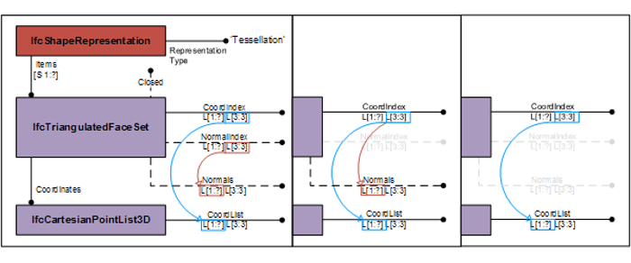
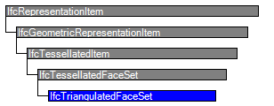

Natural language names
 | tesselliertes Element aus Dreiecksflächen |
 | Triangulated Face Set |
 | Ensemble de faces triangulées |
| tesselliertes Element aus Dreiecksflächen |
| Triangulated Face Set |
| Ensemble de faces triangulées |
| Item | SPF | XML | Change | Description | IFC2x3 to IFC4 |
|---|---|---|---|---|
| IfcTriangulatedFaceSet | ADDED | IFC4 Addendum 1 | ||
| IfcTriangulatedFaceSet | ||||
| Closed | MODIFIED | Type changed from BOOLEAN to IfcBoolean. | ||
| CoordIndex | MODIFIED | Type changed from INTEGER to IfcPositiveInteger. | ||
| NormalIndex | MODIFIED | Type changed from INTEGER to IfcPositiveInteger. |
The IfcTriangulatedFaceSet is a tessellated face set with all faces being bound by triangles. The faces are constructed by implicit polylines defined by three Cartesian points. The coordinates of each point are provided by a one-based index into an ordered list of Cartesian points provided by the two-dimensional list CoordIndex, where
Optional the normals at each vertex can be provided by the two-dimensional list NormalIndex, where
In case of corresponding lists of points and normals where the order of the points in the CoordList is identical to the order of the normals in Normals, a single index list shall be used. The the list of CoordIndex will be applied to both points and normals, and the list of NormalIndex shall be empty. In other words, if the list of Normals in not empty and the list of NormalIndex is empty, then the list of CoordIndex shall be used to point to the corresponding positions in the list of CoordList and Normals.
NOTE Using corresponding lists of points and normals allows to use only a single list of indices into both at the expense of having non-unique collections of points and vertices.
Figure 334 shows the use of IfcTriangulatedFaceSet without annotation. The diagram of the IfcTriangulatedFaceSet represents the indices and the ordered list into which the indices point. The index starts with 1 (indexed as 1 to N), if the greatest index in CoordIndex in N, then the IfcCartesianPointList shall have N lists of 3:3 coordinates.
 |
There are three possibilities to instantiate the IfcTriangulatedFaceSet, in addition to the mandatory attributes CoordList through Coordinates and CoordIndex the optional attributes have the following combination:
|
Figure 334 — Triangulated face set |

|
Figure 335 shows an IfcTriangulatedFaceSet represented by IfcCartesianPointList3D: ((0.,0.,0.), (1.,0.,0.), (1.,1.,0.), (0.,1.,0.), (0.,0.,2.), (1.,0.,2.), (1.,1.,2.), (0.,1.,2.)) |
Figure 335 — Triangulated face set geometry |
NOTE The definition of IfcTriangulatedFaceSet is based on the indexedFaceSet, and indexedTriangleSet defined in ISO/IEC 19775-1
HISTORY New entity in IFC4.
| # | Attribute | Type | Cardinality | Description | C |
|---|---|---|---|---|---|
| 4 | CoordIndex | IfcPositiveInteger | L[1:?]L[3:3] |
Two-dimensional list, where the first dimension represents the triangles (from 1 to N) and the second dimension the indices to
three points defining the vertices (from 1 to 3).
NOTE The coordinates of the vertices are provided by the indexed list of SELF\IfcTessellatedFaceSet.Coordinates.CoordList. | X |
| 5 | NormalIndex | IfcPositiveInteger | L[1:?]L[3:3] |
Two-dimensional list, where the first dimension represents the triangle (from 1 to N) and the second dimension the indices to
three normals (from 1 to 3) corresponding to the vertices.
The directions of the normals are provided by the indexed list of SELF\IfcTessellatedFaceSet.Normals. | X |
| NumberOfTriangles :=SIZEOF(CoordIndex) | IfcInteger | [1:1] | Derived number of triangles used for this triangulation. | X |

| # | Attribute | Type | Cardinality | Description | C |
|---|---|---|---|---|---|
| IfcRepresentationItem | |||||
| LayerAssignment | IfcPresentationLayerAssignment @AssignedItems | S[0:1] | Assignment of the representation item to a single or multiple layer(s). The LayerAssignments can override a LayerAssignments of the IfcRepresentation it is used within the list of Items. | X | |
| StyledByItem | IfcStyledItem @Item | S[0:1] | Reference to the IfcStyledItem that provides presentation information to the representation, e.g. a curve style, including colour and thickness to a geometric curve. | X | |
| IfcGeometricRepresentationItem | |||||
| IfcTessellatedItem | |||||
| IfcTessellatedFaceSet | |||||
| 1 | Coordinates | IfcCartesianPointList3D | [1:1] | An ordered list of Cartesian points used by the coordinate index defined at the subtypes of IfcTessellatedFaceSet. | X |
| 2 | Normals | IfcParameterValue | L[1:?]L[3:3] | An ordered list of directions used by the normal index defined at the subtypes of IfcTessellatedFaceSet. It is a two-dimensional list of directions provided by three parameter values. | X |
| 3 | Closed | IfcBoolean | [0:1] | Indication whether the IfcTessellatedFaceSet is a closed shell or not. If omited no such information can be provided. | X |
| HasColours | IfcIndexedColourMap @MappedTo | S[0:1] | Reference to the indexed colour map providing the corresponding colour RGB values to the faces of the subtypes of IfcTessellatedFaceSet. | X | |
| HasTextures | IfcIndexedTextureMap @MappedTo | S[0:?] | Reference to the indexed texture map providing the corresponding texture coordinates to the vertices bounding the faces of the subtypes of IfcTessellatedFaceSet. | X | |
| IfcTriangulatedFaceSet | |||||
| 4 | CoordIndex | IfcPositiveInteger | L[1:?]L[3:3] |
Two-dimensional list, where the first dimension represents the triangles (from 1 to N) and the second dimension the indices to
three points defining the vertices (from 1 to 3).
NOTE The coordinates of the vertices are provided by the indexed list of SELF\IfcTessellatedFaceSet.Coordinates.CoordList. | X |
| 5 | NormalIndex | IfcPositiveInteger | L[1:?]L[3:3] |
Two-dimensional list, where the first dimension represents the triangle (from 1 to N) and the second dimension the indices to
three normals (from 1 to 3) corresponding to the vertices.
The directions of the normals are provided by the indexed list of SELF\IfcTessellatedFaceSet.Normals. | X |
| NumberOfTriangles :=SIZEOF(CoordIndex) | IfcInteger | [1:1] | Derived number of triangles used for this triangulation. | X | |
<xs:element name="IfcTriangulatedFaceSet" type="ifc:IfcTriangulatedFaceSet" substitutionGroup="ifc:IfcTessellatedFaceSet" nillable="true"/>
<xs:complexType name="IfcTriangulatedFaceSet">
<xs:complexContent>
<xs:extension base="ifc:IfcTessellatedFaceSet">
<xs:attribute name="CoordIndex" use="optional">
<xs:simpleType>
<xs:restriction>
<xs:simpleType>
<xs:list itemType="ifc:IfcPositiveInteger"/>
</xs:simpleType>
<xs:minLength value="3"/>
</xs:restriction>
</xs:simpleType>
</xs:attribute>
<xs:attribute name="NormalIndex" use="optional">
<xs:simpleType>
<xs:restriction>
<xs:simpleType>
<xs:list itemType="ifc:IfcPositiveInteger"/>
</xs:simpleType>
<xs:minLength value="3"/>
</xs:restriction>
</xs:simpleType>
</xs:attribute>
</xs:extension>
</xs:complexContent>
</xs:complexType>
ENTITY IfcTriangulatedFaceSet
SUBTYPE OF (IfcTessellatedFaceSet);
CoordIndex : LIST [1:?] OF LIST [3:3] OF IfcPositiveInteger;
NormalIndex : OPTIONAL LIST [1:?] OF LIST [3:3] OF IfcPositiveInteger;
DERIVE
NumberOfTriangles : IfcInteger := SIZEOF(CoordIndex);
END_ENTITY;
 EXPRESS-G diagram
EXPRESS-G diagram Link to this page
Link to this page